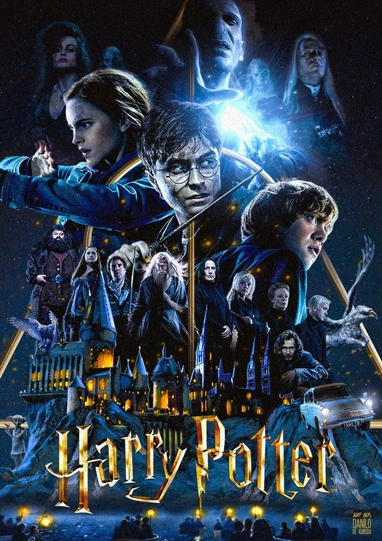

Harry Potter: una saga mágica que marcó generaciones

Harry Potter es una de las sagas cinematográficas y literarias más famosas del mundo. Está basada en los libros escritos por J. K. Rowling y cuenta la historia de un joven mago que descubre, a los 11 años, que pertenece al mundo de la magia.
Harry vive con sus crueles tíos, los Dursley, hasta que recibe una carta de aceptación para estudiar en el Colegio Hogwarts de Magia y Hechicería. Allí conoce a sus mejores amigos, Ron Weasley y Hermione Granger, y comienza una aventura llena de misterios, peligros y descubrimientos.
A lo largo de la saga, Harry deberá enfrentarse al mago tenebroso Lord Voldemort, responsable de la muerte de sus padres y principal amenaza para el mundo mágico.
Las películas fueron producidas por Warner Bros. y se convirtieron en un fenómeno mundial. La saga consta de ocho películas, estrenadas entre 2001 y 2011, que recaudaron miles de millones de dólares en taquilla.
Harry Potter no solo ha sido un éxito comercial, sino que también ha dejado una huella profunda en la cultura popular, inspirando a millones de personas en todo el mundo.